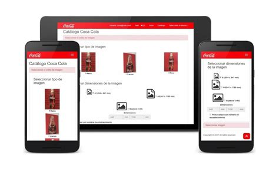

IT MOBILE APPLICATIONS AND WEB DEVELOPMENT
IT MAWD is a strand for Senior High School offered in STI COLLEGES. It focuses on making Mobile Applications and Web Development. It is a program in STI Senior High School that can help its students prepare for a future in technology.